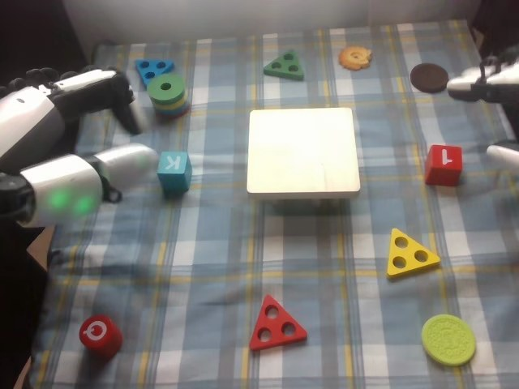

RoboCOIN · Airbot MMK2 · stack_block/episode_000003
Episode 000003

Annotation
From the dedicated visual review of this video (humanoid_action_v1). Plain text · JSON
Observed outcome
- Status
success_visible
- Description
The blue letter cube rests on the white mini table, and the red cube sits on top of it, forming a two-cube stack at the table's left-center. The stack is stable and both hands are out of view by the final frame (255). The red cube appears pinkish in the last frames because of exposure.
Hand roles
- Left
Robot's left hand (image-left): the only hand active in frames 0-120. It closes its fingers around the blue letter cube (fingers over the top, lower finger section supporting the near side), lifts it, carries it onto the left side of the white mini table, settles it, opens and lifts away. It then extends flat across the table edge and pulls back, stays open and idle at the left through the right hand's placement (it does not stabilize the stack), and retracts out of view at about frames 216-232.
- Right
Robot's right hand (image-right): open and stationary at the right edge in frames 0-119. From about frame 120 it approaches the red cube, closes thumb and fingers on it (about frames 156-160), lifts it, carries it left over the mini table, sets it on top of the blue cube (about frames 186-192), keeps its fingers at the cube's right side while settling (to about 210), then opens, releases and withdraws up and to the right (frames 212-232).
Coordination
Strictly sequential, no hand-to-hand transfer or simultaneous manipulation: the left hand finishes placing and releases the blue cube (about frame 120) and withdraws leftward, then the right hand, which has been waiting at the right edge and starts moving about frame 120, picks and places the red cube while the left hand stays idle. The left hand's placed blue cube forms the base that the right hand's red cube is set on. Both arms retract at the end.
Robot-side evidence
- Conclusion
The hand at image-left is the robot's left hand and the hand entering from image-right is the robot's right hand. Image left matches robot left in the head view.
- Evidence
- Telemetry (observation.state, joint names from dataset info.json): left_arm joints 1-6 and left_hand joints change substantially in frames 0-120, the period when the image-left hand grasps, carries and places the blue cube; right_arm joints are essentially unchanged (deltas about 0.01-0.06 rad) until about frame 120, then move strongly in frames 120-210 when the image-right hand picks and places the red cube (right_hand joints also change most in frames 120-160).
- cam_left_wrist_rgb at frame 60 shows the blue cube beside the left hand's fingers, and cam_right_wrist_rgb at frame 176 shows the red cube held beside the right hand's fingers; cam_left_wrist_rgb at frame 176 shows the red cube in the other hand at the upper left of that view, matching the head-view roles.
- Publisher instruction assigns the first placement to the left hand and the on-top placement to the right hand, which agrees with the visible order. The publisher text was not used as the sole evidence.
- Confidence
high
Chronology
| Frames | Observation |
|---|---|
| 0–23 | Initial state: the blue (teal-blue) letter cube with a white 'K' stands on the cloth at image-left, close to the stacked ring toy. A white wooden mini table (square stand) sits in the middle. Red cube (white '1'/'L' marking) is at image-right, with yellow triangle, red triangle, red cylinder, lime disc and other toys elsewhere. The robot's left hand (image-left, open, fingers extended, forearm with green indicator light) is right beside the blue cube. The right hand is open at the far right edge, partly out of view. The left arm rotates and the hand turns so the fingers come around the cube (frames 8-23). |
| 24–58 | Left hand closes onto the blue cube: fingers curl over the top and the lower finger/thumb section supports the near side (visible 36-52). The cube is gripped while still on the table; the right hand stays open and static at the right edge. |
| 59–78 | Left hand lifts the blue cube off the table (cube raised and blurred by about frame 66) and carries it up and to the right toward the mini table; the arm and cable rise into view and the hand is held over the table's left side by frame 78. |
| 79–98 | The blue cube is carried above the mini table's left half and lowered; by frame 96 it touches the table top near its left rim, still held by the left hand. |
| 99–120 | Left hand adjusts and settles the blue cube on the table's left side (cube resting at frames 100-118, tilted in the grip briefly at 112-114), then opens and lifts clear (frame 120 shows the hand rising off the cube; cube remains on the table). This is a corrective settling of the same placement. |
| 121–146 | Left hand extends flat, fingers pointing right, across the table's left edge beside the cube (frames 124-140) and then pulls back to image-left with an open hand; it is no longer touching the cube by frame 146. The blue cube remains on the table top. Meanwhile the right arm begins moving in from the right edge (frames 120-146), the hand open and approaching the red cube. |
| 147–166 | Right hand reaches the red cube at image-right (hand around/over it by frame 156-158), closes its thumb and fingers on it, and lifts it off the cloth (frame 160-164), carrying it up and toward the left. The left hand rests open and extended at the left, idle. |
| 167–186 | Right hand carries the red cube leftward over the table, the forearm and cable entering view from the upper right. The cube is tilted in the grip and held above the blue cube (frames 176-184), then lowered toward it. |
| 187–210 | Red cube is placed on top of the blue cube (touching by about frame 186-190, red cube sitting on the blue cube by frame 192 with the right hand's fingers still at its right side; frames 196-210 show the red cube sitting on the blue cube, aligned with it, with the right fingertips resting against its right face). |
| 211–232 | Right hand opens and releases the red cube (about frames 212-220), then withdraws up and to the right (blur at frames 220-224, fingers out of view by about 232). The left arm raises and retracts out of view toward the upper left at the same time (frames 216-232). |
| 233–255 | Both hands are out of view (only a small piece of robot hardware remains at image-left, frames 240-255). The red cube sits on top of the blue cube, both centered on the white mini table; the stack is stable and unchanged through the last frame. |
Clip selection
Complete single-task clip retained: the left hand places the blue letter cube on the white mini table, then the right hand places the red cube on the blue cube, and both arms withdraw. These are ordinary phases of one stacking task, so the full video is kept without cropping or a first_substep.
Differences from the publisher annotation
- The publisher instruction (shared by all episodes) says 'square building blocks in the center' with the left hand; visibly the left hand places a small teal-blue cube with a white 'K' on a white mini table that stands in the middle of the cloth, so the cube is a lettered cube rather than a generic square block, and the table is the center target.
- The instruction says 'cylindrical building blocks' placed on top by the right hand; the visible object is a red cube with a white marking, not a cylinder (the red cylinder with a rotation symbol at lower-left is never touched).
- Subtask labels call the end effectors 'grippers', but the robot has five-finger dexterous hands.
- Subtask timeline: grasp 0-59, place blue 60-116, grasp red 117-154, place red 155-208, End 209-255. Visually, the left hand's fingers close around the cube about frames 24-58 and lift it at about 59-66, so the 'grasp' label ends where lifting starts; the blue cube touches the table about frame 96 and is released about 112-120, so the 'place' label roughly matches. The right hand only begins to move at about frame 120 and closes on the red cube about 156-160, so the 'grasp red' label (117-154) covers the approach and the closing falls at the start of the 'place red' label; the red cube lands on the blue cube about frames 186-192 and is released about 212-220, whereas the 'End' label begins at 209 while the right hand is still releasing and withdrawing until about 232. The blue cube is labeled 'blue build blocks' (teal-blue cube) and the 'Mini table' is the white stand.
Uncertainties
- Exact finger contact points on the blue cube and the red cube are partly occluded or blurred in the head view; 'fingers over the top with the lower finger section supporting the near side' for the blue cube and 'between thumb and fingers' for the red cube are the visible configurations, not confirmed per-finger contacts.
- The left hand's flat extension across the table edge at frames 124-140 puts the fingertip beside the blue cube; no push or displacement of the cube is visible, but a slight touch cannot be ruled out.
- The red cube looks pinkish and its marking ('1' or 'L') changes with exposure and orientation, so the character cannot be identified reliably.
- The release of the red cube is partly occluded by the right hand's fingers at frames 196-216, so the exact release frame is approximate; the cube is seen resting on the blue cube once the hand withdraws.
- Whether the right hand's fingers lightly touch the cube during settling at frames 196-210 or only rest beside it is not resolvable at this resolution.
Complete review record action_review.json
{
"prompt_protocol": "humanoid_action_v1",
"prompt_protocol_note": "RoboCOIN Airbot MMK2 is a dual-arm robot with five-finger dexterous hands, not a Humanoid Everyday or NVIDIA GR1 dataset. humanoid_action_v1 is applied by analogy: robot-relative left/right hand, separate per-hand roles, coordination order, per-hand contact changes and the actual end state, with the shared constraint sentence appended verbatim.",
"prompt_provenance": "visually_authored_from_video_and_initial_frame",
"dataset": "RoboCOIN/Airbot_MMK2_stack_block",
"task": "stack_block",
"episode_id": "episode_000003",
"generation_camera": "cam_head_rgb (robot first-person head camera)",
"source_video": "../../original/videos/chunk-000/observation.images.cam_head_rgb/episode_000003.mp4",
"generation_video": "../video.mp4",
"conditioning_first_frame": "../first_frame.png",
"action_prompt": "../actiongeneration_prompt.txt",
"source_frame_count": 256,
"fps": 30,
"resolution": [
640,
480
],
"selected_source_frame_start": 0,
"selected_source_frame_end_exclusive": 256,
"selection_reason": "Complete single-task clip retained: the left hand places the blue letter cube on the white mini table, then the right hand places the red cube on the blue cube, and both arms withdraw. These are ordinary phases of one stacking task, so the full video is kept without cropping or a first_substep.",
"usable_prompt": "The robot's left hand closes its fingers around the blue letter cube at the left, lifts it, carries it over, and sets it on the white mini table, then opens and pulls back. Afterward the robot's right hand enters from the right edge, pinches the red cube between its thumb and fingers, lifts it, carries it across, and sets it on top of the blue cube, then opens and withdraws while the left hand stays idle, leaving the red cube stacked on the blue one. Keep the camera fixed; preserve robot geometry, physically valid joint motion, and normal gripper opening and closing.",
"chronology": [
{
"frames": [
0,
23
],
"observation": "Initial state: the blue (teal-blue) letter cube with a white 'K' stands on the cloth at image-left, close to the stacked ring toy. A white wooden mini table (square stand) sits in the middle. Red cube (white '1'/'L' marking) is at image-right, with yellow triangle, red triangle, red cylinder, lime disc and other toys elsewhere. The robot's left hand (image-left, open, fingers extended, forearm with green indicator light) is right beside the blue cube. The right hand is open at the far right edge, partly out of view. The left arm rotates and the hand turns so the fingers come around the cube (frames 8-23)."
},
{
"frames": [
24,
58
],
"observation": "Left hand closes onto the blue cube: fingers curl over the top and the lower finger/thumb section supports the near side (visible 36-52). The cube is gripped while still on the table; the right hand stays open and static at the right edge."
},
{
"frames": [
59,
78
],
"observation": "Left hand lifts the blue cube off the table (cube raised and blurred by about frame 66) and carries it up and to the right toward the mini table; the arm and cable rise into view and the hand is held over the table's left side by frame 78."
},
{
"frames": [
79,
98
],
"observation": "The blue cube is carried above the mini table's left half and lowered; by frame 96 it touches the table top near its left rim, still held by the left hand."
},
{
"frames": [
99,
120
],
"observation": "Left hand adjusts and settles the blue cube on the table's left side (cube resting at frames 100-118, tilted in the grip briefly at 112-114), then opens and lifts clear (frame 120 shows the hand rising off the cube; cube remains on the table). This is a corrective settling of the same placement."
},
{
"frames": [
121,
146
],
"observation": "Left hand extends flat, fingers pointing right, across the table's left edge beside the cube (frames 124-140) and then pulls back to image-left with an open hand; it is no longer touching the cube by frame 146. The blue cube remains on the table top. Meanwhile the right arm begins moving in from the right edge (frames 120-146), the hand open and approaching the red cube."
},
{
"frames": [
147,
166
],
"observation": "Right hand reaches the red cube at image-right (hand around/over it by frame 156-158), closes its thumb and fingers on it, and lifts it off the cloth (frame 160-164), carrying it up and toward the left. The left hand rests open and extended at the left, idle."
},
{
"frames": [
167,
186
],
"observation": "Right hand carries the red cube leftward over the table, the forearm and cable entering view from the upper right. The cube is tilted in the grip and held above the blue cube (frames 176-184), then lowered toward it."
},
{
"frames": [
187,
210
],
"observation": "Red cube is placed on top of the blue cube (touching by about frame 186-190, red cube sitting on the blue cube by frame 192 with the right hand's fingers still at its right side; frames 196-210 show the red cube sitting on the blue cube, aligned with it, with the right fingertips resting against its right face)."
},
{
"frames": [
211,
232
],
"observation": "Right hand opens and releases the red cube (about frames 212-220), then withdraws up and to the right (blur at frames 220-224, fingers out of view by about 232). The left arm raises and retracts out of view toward the upper left at the same time (frames 216-232)."
},
{
"frames": [
233,
255
],
"observation": "Both hands are out of view (only a small piece of robot hardware remains at image-left, frames 240-255). The red cube sits on top of the blue cube, both centered on the white mini table; the stack is stable and unchanged through the last frame."
}
],
"anatomical_side_evidence": {
"conclusion": "The hand at image-left is the robot's left hand and the hand entering from image-right is the robot's right hand. Image left matches robot left in the head view.",
"evidence": [
"Telemetry (observation.state, joint names from dataset info.json): left_arm joints 1-6 and left_hand joints change substantially in frames 0-120, the period when the image-left hand grasps, carries and places the blue cube; right_arm joints are essentially unchanged (deltas about 0.01-0.06 rad) until about frame 120, then move strongly in frames 120-210 when the image-right hand picks and places the red cube (right_hand joints also change most in frames 120-160).",
"cam_left_wrist_rgb at frame 60 shows the blue cube beside the left hand's fingers, and cam_right_wrist_rgb at frame 176 shows the red cube held beside the right hand's fingers; cam_left_wrist_rgb at frame 176 shows the red cube in the other hand at the upper left of that view, matching the head-view roles.",
"Publisher instruction assigns the first placement to the left hand and the on-top placement to the right hand, which agrees with the visible order. The publisher text was not used as the sole evidence."
],
"confidence": "high"
},
"arm_roles": {
"left": "Robot's left hand (image-left): the only hand active in frames 0-120. It closes its fingers around the blue letter cube (fingers over the top, lower finger section supporting the near side), lifts it, carries it onto the left side of the white mini table, settles it, opens and lifts away. It then extends flat across the table edge and pulls back, stays open and idle at the left through the right hand's placement (it does not stabilize the stack), and retracts out of view at about frames 216-232.",
"right": "Robot's right hand (image-right): open and stationary at the right edge in frames 0-119. From about frame 120 it approaches the red cube, closes thumb and fingers on it (about frames 156-160), lifts it, carries it left over the mini table, sets it on top of the blue cube (about frames 186-192), keeps its fingers at the cube's right side while settling (to about 210), then opens, releases and withdraws up and to the right (frames 212-232)."
},
"coordination": "Strictly sequential, no hand-to-hand transfer or simultaneous manipulation: the left hand finishes placing and releases the blue cube (about frame 120) and withdraws leftward, then the right hand, which has been waiting at the right edge and starts moving about frame 120, picks and places the red cube while the left hand stays idle. The left hand's placed blue cube forms the base that the right hand's red cube is set on. Both arms retract at the end.",
"observed_outcome": {
"status": "success_visible",
"description": "The blue letter cube rests on the white mini table, and the red cube sits on top of it, forming a two-cube stack at the table's left-center. The stack is stable and both hands are out of view by the final frame (255). The red cube appears pinkish in the last frames because of exposure."
},
"source_annotation": {
"publisher_instruction": "place the square building blocks in the center with left hand and put the cylindrical building blocks on top with right hand.",
"subtask_timeline": [
{
"start_frame": 0,
"end_frame_inclusive": 59,
"subtasks": [
"Grasp the blue build blocks with the left gripper"
]
},
{
"start_frame": 60,
"end_frame_inclusive": 116,
"subtasks": [
"Place the blue build blocks on the Mini table with the left gripper"
]
},
{
"start_frame": 117,
"end_frame_inclusive": 154,
"subtasks": [
"Grasp the red build blocks with the right gripper"
]
},
{
"start_frame": 155,
"end_frame_inclusive": 208,
"subtasks": [
"Place the red build blocks on the blue build block with the right gripper"
]
},
{
"start_frame": 209,
"end_frame_inclusive": 255,
"subtasks": [
"End"
]
}
],
"scene_annotation": "Green blocks: center, Red blocks: front-right, Blue blocks: back-left, Yellow blocks: front-right, Purple blocks: none, Glasses box: none",
"use": "Used only as an annotation starting point; chronology comes from the decoded frames."
},
"source_annotation_discrepancies": [
"The publisher instruction (shared by all episodes) says 'square building blocks in the center' with the left hand; visibly the left hand places a small teal-blue cube with a white 'K' on a white mini table that stands in the middle of the cloth, so the cube is a lettered cube rather than a generic square block, and the table is the center target.",
"The instruction says 'cylindrical building blocks' placed on top by the right hand; the visible object is a red cube with a white marking, not a cylinder (the red cylinder with a rotation symbol at lower-left is never touched).",
"Subtask labels call the end effectors 'grippers', but the robot has five-finger dexterous hands.",
"Subtask timeline: grasp 0-59, place blue 60-116, grasp red 117-154, place red 155-208, End 209-255. Visually, the left hand's fingers close around the cube about frames 24-58 and lift it at about 59-66, so the 'grasp' label ends where lifting starts; the blue cube touches the table about frame 96 and is released about 112-120, so the 'place' label roughly matches. The right hand only begins to move at about frame 120 and closes on the red cube about 156-160, so the 'grasp red' label (117-154) covers the approach and the closing falls at the start of the 'place red' label; the red cube lands on the blue cube about frames 186-192 and is released about 212-220, whereas the 'End' label begins at 209 while the right hand is still releasing and withdrawing until about 232. The blue cube is labeled 'blue build blocks' (teal-blue cube) and the 'Mini table' is the white stand."
],
"uncertainties": [
"Exact finger contact points on the blue cube and the red cube are partly occluded or blurred in the head view; 'fingers over the top with the lower finger section supporting the near side' for the blue cube and 'between thumb and fingers' for the red cube are the visible configurations, not confirmed per-finger contacts.",
"The left hand's flat extension across the table edge at frames 124-140 puts the fingertip beside the blue cube; no push or displacement of the cube is visible, but a slight touch cannot be ruled out.",
"The red cube looks pinkish and its marking ('1' or 'L') changes with exposure and orientation, so the character cannot be identified reliably.",
"The release of the red cube is partly occluded by the right hand's fingers at frames 196-216, so the exact release frame is approximate; the cube is seen resting on the blue cube once the hand withdraws.",
"Whether the right hand's fingers lightly touch the cube during settling at frames 196-210 or only rest beside it is not resolvable at this resolution."
],
"inspection_coverage": {
"frames_decoded": 256,
"frames_sampled_in_contact_sheets": 128,
"stride": 2,
"contact_sheet_frame_indices": "0,2,...,254 (even indices), 12 per sheet at 400x300",
"native_resolution_frames_inspected": [
0,
36,
52,
66,
78,
96,
112,
120,
130,
146,
158,
164,
176,
188,
210,
222,
255
],
"initial_png_inspected": true,
"initial_png_inspected_note": "generation input/first_frame.png viewed at native 640x480 after the full sequence was understood; it is pixel-identical to decoded frame 0 of video.mp4.",
"other_cameras_and_telemetry": "Single frames at indices 60 and 176 of cam_left_wrist_rgb and cam_right_wrist_rgb; observation.state Parquet joint deltas for frames 0-60, 60-120, 120-160, 160-210 and 210-255; joint names from the dataset info.json.",
"temporary_files": "Contact sheets and frames were written only to a temporary directory outside the repository and deleted afterwards."
},
"evidence_frame_indices": [
0,
24,
36,
52,
66,
78,
96,
112,
120,
130,
146,
158,
164,
176,
188,
210,
222,
255
],
"review_completed_at": "2026-10-15T20:36:24Z",
"dedicated_review_agent": "review_robocoin_episode_000003"
}